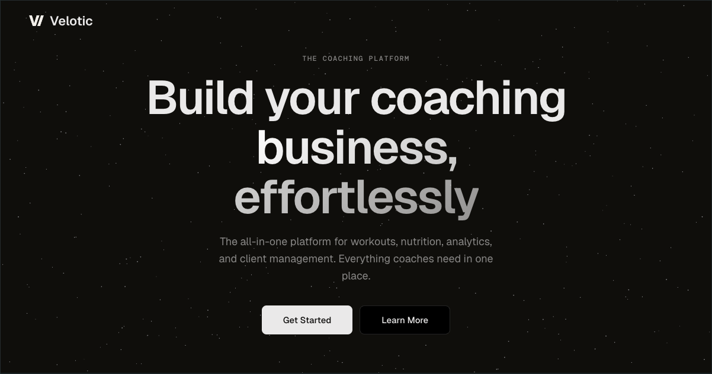
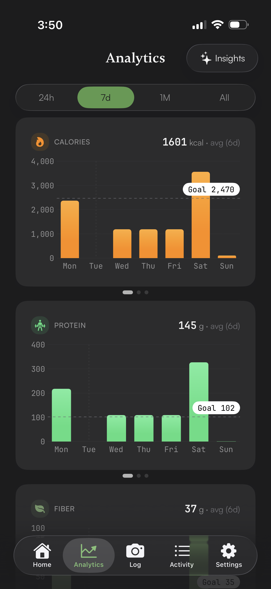
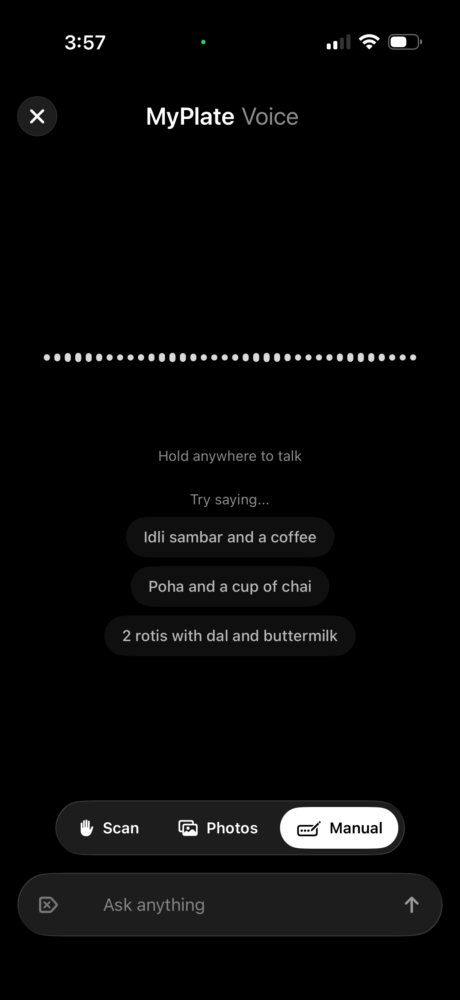
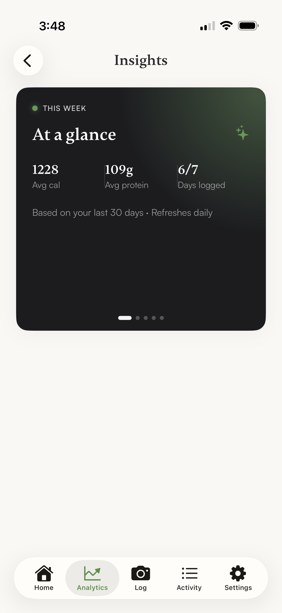
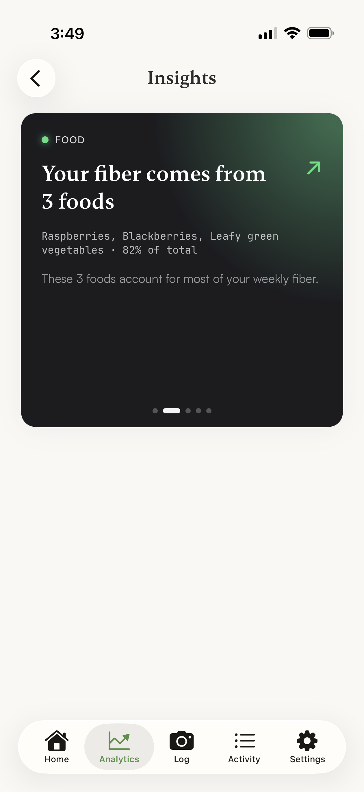
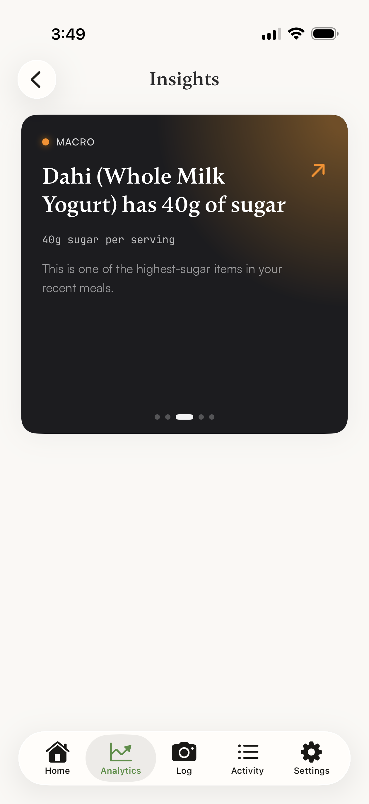
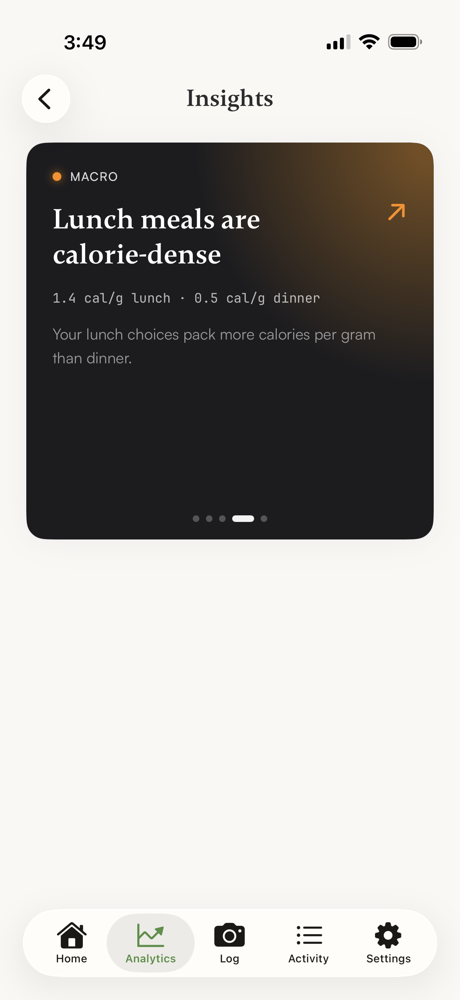
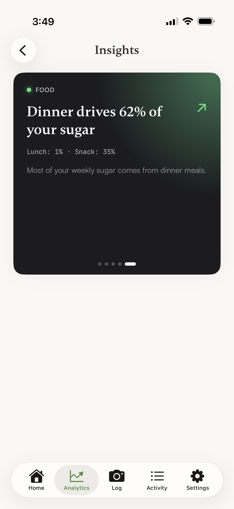

A coach who answers at 11 PM, without burning out the human.
Velotic is a B2B SaaS for independent fitness coaches. A coach workspace, a client app on iOS and Android, and an AI layer that speaks in the human coach's own voice. Designed and shipped solo in three months.

Where coaches lose their week.
I started by talking to online fitness coaches in India, the audience I planned to ship to first. Three numbers kept coming back. Coaches were running their businesses out of 13+ disconnected tools. Spreadsheets, PDFs, a generic calorie app, Calendly, WhatsApp, Razorpay. Roughly 40 to 60% of their week went to admin, not coaching. Most said the wheels came off at 15 to 20 clients. Beyond that, they hired help or burned out.
"When a client asks a question at 11 PM, I either answer and don't sleep, or I don't answer and feel guilty about it. There's no middle ground."
Composite of conversations with online coaches, Bangalore + Pune
The 11 PM line was the design brief in one sentence. Whatever I built had to take the routine question off the human's plate without turning the coach into a chatbot.
Same data, opposite feeling surfaces.
A wide screen for the coach. A phone for the client. One spine in the middle.
Most coaching tools treat the coach and the client as one user with two passwords. They share data like programs, meals, checkins, payments, but want completely different things. A coach needs dense tables, drag and drop builders, and revenue at a glance. A client needs a phone and as few taps as possible. So I split the product into three frontends sharing one Firebase backbone, and gave each surface permission to look like what its user actually wants.
web portal
Swift Charts
Health Connect
Fig 1. Three frontends, one Firebase spine, three model providers split by job.
Two opinionated defaults followed. India first, not India friendly. Indian food database, GST compliant invoicing, Razorpay primary with Stripe secondary, WhatsApp Business API, asia-south1 region. The beachhead is Indian coaches, so India is the unmarked case and the rest of the world is the configuration. Multi coach by default. RBAC, head coach permissions, audit events. A studio with five trainers runs on the same product as a solo coach. Building multi tenancy last would've forced a rewrite.
One product, two postures.
The coach workspace replaces six tools. The client app is built for the phone, with as few taps as possible.
The coach workspace
One login lets a coach run a paid discovery call, take a client through onboarding, assign a workout and nutrition plan, send a custom form, chat over WhatsApp or in the app, charge in INR or USD, and watch their MRR move. Thirteen modules in total. Six daily driver surfaces below. The rest (Clients, Workout Studio, Templates, Forms Builder, Calendar, Analytics, Team) sit behind a primary nav rail.
Fig 2. Six of the thirteen coach modules. The two tinted are the daily entry points where most coach time is spent.
The client app
SwiftUI on iOS 18 with Swift Charts, HealthKit, biometric lock, Dynamic Island toasts. Jetpack Compose on Material 3 with Hilt, WorkManager, Health Connect, ExoPlayer for exercise demos. Both apps share five tabs and the same data model.



Fig 3. The client app on Android. Insight Cards are AI generated weekly readings. Narrative not numbers.
An AI that sounds like the coach the client signed up for.
The category bet, and the one decision the rest of the product has to defend.
The easy build is a generic chatbot bolted onto the side. That kills the product. A client paid to be coached by this human. If the AI sounds like a generic LLM, the coach's brand is the thing being diluted.
So the system prompt is assembled per request from the coach's own voice. Their bio, certifications, methodology, communication tone, plus a panel of editable AI directives they can write themselves. The client's active workout plan, nutrition targets, last assessment, and recent logs are layered on top.
Fig 4. The system prompt as four stacked layers. The top two (safety, coach voice) are stable. The bottom two (client state, task) change every message.
Three model providers, split by job.




Fig 5. Insight Cards are the AI's user facing surface. Single fact headline, monospaced data line, soft drill down. Same component, dozens of stories.
Two design moves matter more than the model choice. Every coach supplied string runs through a two pass prompt injection sanitizer before it reaches the model. The AI can be coached by the coach but not jailbroken by the client. And every reply carries a small "AI generated · Not medical advice" disclaimer.
What I almost shipped, and didn't.
Three months solo means everything ships at the cost of something else. Two cuts mattered more than the rest.
Feature complete, premarket, honest about it.
Status · in private beta, May 2026
The coach portal (13 modules), the client apps on iOS and Android (10 modules each), the AI layer, the design system, and a preseed pitch deck all shipped in twelve weeks. No paying users yet, no LTV:CAC to report, no engagement claims I can stand behind. What I can claim is the falsifiable next test.
Pilot target with five design partner coaches starting June 2026. Routine client questions resolved by the AI Coach without escalating to the human, measured weekly. If it holds across a month, the product idea earns the next round. If it doesn't, the AI Coach needs surgery before anything else ships.
The two takeaways I'm carrying into the next one. A token named design system beats a pixel perfect one. AccentGreen meaning the same thing on three platforms is what kept ~150k lines of platform code coherent. And the unit of design isn't a screen, it's the conversation between surfaces. The most valuable diagram I drew was the workflow of a workout from coach planner → Firestore → client app → log → coach analytics, not any single screen.